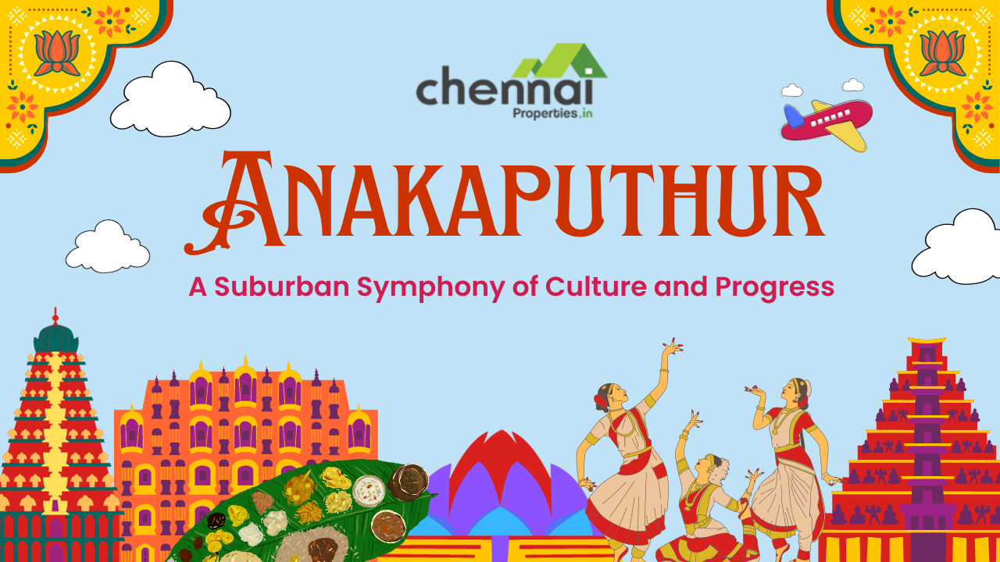

Anakaputhur is a vibrant locality in the Gingee region, known for its rich cultural heritage and bustling marketplaces. The area is characterized by its well-planned residential layouts and efficient infrastructure, making it a desirable place to live. The local community is known for its hospitality and strong sense of unity, contributing to the area's reputation as a harmonious and thriving neighborhood.